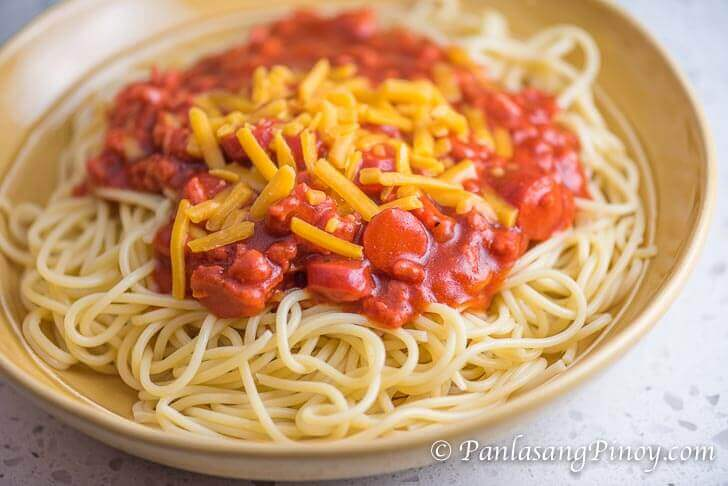

Pinoy Spaghetti

Description
Panlasang Pinoy Spaghetti is my Pinoy version of spaghetti. It is yummy, easy to cook, and just right for the Filipino taste. If you love Jollibee spaghetti, then this is something new to try.
Ingredients
- 1 lb. spaghetti
- 1 lb. ground pork
- 2 8oz. can tomato sauce
- 1 3 oz. can potted meat
- 1 Knorr beef cube
- 1 1/4 cups banana ketchup
- 1 medium yellow onion diced
- 1 teaspoon minced garlic
- 3 tablespoons white sugar
- 4 pieces sliced hotdog
- 1 cup shredded cheddar cheese
- 1 cup water
- Salt and ground black pepper to taste
- 3 tablespoons cooking oil
Steps
- Cook the spaghetti according to package instructions. Set aside.
- Start to make the spaghetti sauce by heating the oil in a cooking pot.
- Sauté the onion and garlic and continue to cook until the onion gets soft.
- Add the ground pork. Cook until the color turns light brown.
- Add the hotdog and potted meat. Cook for 2 minutes.
- Pour the tomato sauce and water. Stir and bring to a boil.
- Add Knorr beef cube. Cover and cook in low to medium heat for 30 minutes.
- Stir-in the banana ketchup and add the sugar. Cook for 5 to 8 minutes.
- Season with salt and ground black pepper
- Arrange a serving of spaghetti in a plate. Top with a generous amount of spaghetti sauce. Sprinkle shredded cheddar cheese on top.
- Serve. Share and enjoy!
Home